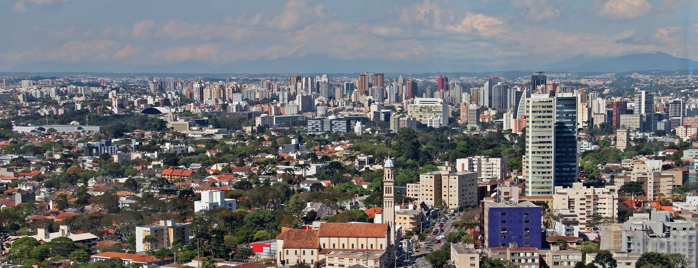

A Cidade de Curitiba foi considerada como o melhor para se viver e mais de uma oportunidade
Curitiba é a capital do estado brasileiro do Paraná. Localiza-se no Primeiro Planalto Paranaense, a 934 metros de altitude,[6] a mais de 110 quilômetros do Oceano Atlântico[13] e a 1 386 km ao sul de Brasília, a capital federal. Com 1 773 718 habitantes,[14] é o município mais populoso do Paraná e da Região Sul, além de ser o oitavo mais populoso do país, segundo o censo demográfico de 2022 realizado pelo IBGE.
Elevada à condição de vila em 1693, a partir de um pequeno povoado bandeirante, Curitiba tornou-se uma importante parada comercial com a abertura da estrada tropeira entre Sorocaba e Viamão,[15] vindo, em 1853, a ser a capital da recém-emancipada Província do Paraná. Desde então, a cidade, conhecida pelas suas ruas largas,[16] manteve um ritmo de crescimento urbano fortalecido pela chegada de diversos imigrantes europeus ao longo do século XIX, na maioria, alemães, poloneses, ucranianos e italianos,[17] que contribuíram para a atual diversidade cultural. Atualmente Curitiba é considerada a capital mais desenvolvida do Brasil, tendo um baixo índice de desemprego e um parque industrial diversificado.[18]


Curitiba experimentou diversos planos urbanísticos[19] e legislações que visavam controlar seu crescimento, que a levaram a ficar famosa internacionalmente pelas suas inovações urbanísticas e cuidado com o meio ambiente.[19][20] A maior delas foi no transporte público,[21][22][23] cujo sistema inspirou o TransMilenio, implantado em Bogotá, na Colômbia.